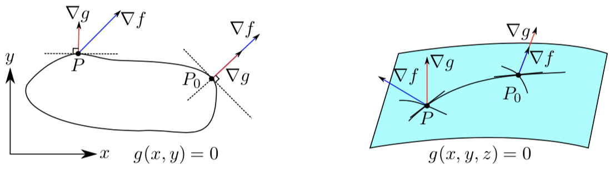

Chapter 4: Derivative#
“Do the difficult things while they are easy and do the great things while they are small. A journey of a thousand miles must begin with a single step.”
—Lao Tzu
The derivative of a univariable function at a point \(a\) is defined as \(f'(a)=\lim_{h\rightarrow 0}\frac{f(a+h)-f(a)}{h}\). This definition can be generalized to partial derivatives for multivariable cases where the partial derivative is taken with respect to a single variable keeping other variables fixed.
Definition 27 (partial derivative)
Let \(A\) be a subset of \(\mathbb{R}^n\), The continuous mapping \(f\) : \(A \rightarrow \mathbb{R}\) is differentiable at an interior point \(a\in A^{\mathrm{o}}\). Fix \(j \in\{1, \ldots, n\}\). Define
Then the \(j^{th}\) partial derivative of \(f\) at \(a\) is defined as \(D_jf(a) = f_j'(a)=\varphi^{\prime}\left(a_j\right)\).
However, this definition cannot be generalized to the derivative of multiple variables because the division \(\frac{f(a+h)-f(a)}{h}\) by a vector \(h\) is not defined. Therefore, we define the derivative of multiple variables as a linear map.
Definition 28 (differetiable function)
A continuous mapping \(f: A \rightarrow \mathbb{R}^m\) from \(A\subset \mathbb{R}^n\) to \(\mathbb{R}^m\) is differentiable at an interial point \(a\in A^{\mathrm{o}}\), if there exists a linear mapping \(T_a: \mathbb{R}^n \rightarrow \mathbb{R}^m\) satisfying the condition
The linear map \(T_a\) is called the total derivative of \(f\) at \(a\), written \(D f_a\) or \((D f)_a\) or \(f'_a\). The matrix of the linear map \(D f_a\) is called the Jacobian matrix \(J_a\) of \(f\) at \(a\).
The linear map \(T_a\), if exists, is unique.
If the function \(f\) is differentiable at the point \(a\), then all partial derivatives of \(f\) at the point \(a\) exist.
If all partial derivatives exist and continuous at the point \(a\), then the function is differentiable at the point \(a\).
With this definition, we can check if a function is differentiable, and if a function is differentiable we can calculate its derivative. We begin with two examples to demonstrate how to find the derivative of a differentiable function.
Let \(C: A \rightarrow \mathbb{R}^m\) (where \(A \subset \mathbb{R}^n\) be the constant mapping \(C(x)=c\) for all \(x \in A\), where \(c\) is some fixed value in \(\mathbb{R}^m\). Then the derivative of \(C\) at any interior point a of \(A\) is the zero mapping.
The derivative of a linear mapping \(T: \mathbb{R}^n \rightarrow \mathbb{R}^m\) at any point \(a \in \mathbb{R}^n\) is again \(T\).
Jacobian matrix
The derivative of a multivariable function \(f(\vec{x})\) at a point \(a\) is a linear map which can approximate the function \(f(\vec{x})\) at the point \(a\). The entries of the matrix of the linear map are partial derivatives \(f_i'(a)\) at \(a\).
Since the derivatives are the linear maps, they have the linearity property, i.e., \(D(f+g)_a = Df_a+Dg_a\) and \(D(cf)_a=cDf_a\) as described in the following theorem.
Theorem 11 (linearity of the derivative)
Let \(f: A \rightarrow \mathbb{R}^m\) (where \(A \subset \mathbb{R}^n\) ) and \(g: B \rightarrow \mathbb{R}^m\) (where \(B \subset \mathbb{R}^n\) ) be mappings. Suppose that \(f\) and \(g\) are differentiable at \(a\in A\cap B\) with derivatives \(D f_a\) and \(D g_a\). Then
The sum \(f+g: A \cap B \longrightarrow \mathbb{R}^m\) is differentiable at a with derivative \(D(f+g)_a=D f_a+D g_a\).
For any \(\alpha \in \mathbb{R}\), the scalar multiple \(\alpha f: A \longrightarrow \mathbb{R}^m\) is differentiable at a with derivative \(D(\alpha f)_a=\alpha D f_a\).
In univariable calculus, the derivative of the product of two functions is \((fg)'=f'g+g'f\). Here is the multivariable version.
Theorem 12 (derivatives of the product )
If two functions \(f: A \rightarrow \mathbb{R}\) (where \(A \subset \mathbb{R}^n\)) and \(g: B \rightarrow \mathbb{R}\) where \(B \subset \mathbb{R}^n\) are differentiable at \(a\), then \(fg\) is differentiable at \(a\) with derivative
If \(g(a) \neq 0\), then \(f / g\) is differentiable at \(a\) with derivative
The most important theorem for calculating multivariable derivatives is the chain rule.
Theorem 13 (multivariable chain rule)
If a continuous map \(f: A \longrightarrow \mathbb{R}^m\) (where \(\left.A \subset \mathbb{R}^n\right)\) is differentiable at the point \(a \in A\), and another continuous mapping \(g: B \rightarrow \mathbb{R}^{\ell}\) is differentiable at the point \(f(a) \in B \subset \mathbb{R}^m\), then the composition \(g \circ f\) is differentiable at the point \(a\), and its derivative is
In terms of Jacobian matrices, since the matrix of a composition is the product of the matrices, the Chain Rule is
Let \(f\) be a differentiable function of several variables and \(C\) be a smooth curve in the domain of \(f\). Then one can restrict the function \(f\) to the curve \(C\), that is, define a function on the curve \(C\) by values of \(f\) on \(C\). Let \(\mathbf{r}=\mathbf{r}(s)\) be a natural parameterization of \(C\) in some rectangular coordinate system. Then the rate of change of \(f\) along \(C\) at a point \(\mathbf{r}(s)\) with increasing \(\mid s\) is given by the chain rule
Linear approximation#
If a continuous map \(f: A \longrightarrow \mathbb{R}^m\) (where \(\left.A \subset \mathbb{R}^n\right)\) is differentiable at the point \(r_0 \in A\), then \(f(r)\) for \(r=r_0+h\) can be approximated by
where the error \(\epsilon(h) = o(\|h\|)\) and \(o\) is little-\(o\) notation and indicates that \(\epsilon(h)\) is much smaller than \(\|h\|\) as \(h\rightarrow 0\).
Example 4
Find all points at which the function \(f(x, y)=x^2+3 y^2\) has a good linear approximation. Find the tangent plane to the graph \(z=\) \(f(x, y)\) at the point \((2,1,7)\) or show that no such plane exists.
The tangent plane at a point \(\left(x_0, y_0, z_0\right)\) of the graph \(z=f(x, y)\) exits if and only if \(f(x, y)\) is differentiable at \(\left(x_0, y_0\right)\). The polynomial function \(f(x, y)=x^2+3 y^2\) has continuous partial derivatives at any point and, f$ is differentiable everywhere. The components of a normal of the tangent plane are
An equation of the tangent plane is \(4(x-2)+6(y-1)-(z-7)=0\) or \(4 x+6 y-z=7\).
Example 5 (Multivariate Newton’s method)
We may use the linear approximation to find the solution to the systematic equations \(f(x) = 0\) of the nonlinear multivariate function \(f:\mathbb{R}^n \longrightarrow \mathbb{R}^n\) which is differentiable everywhere, i.e., \(f(x)-f(x^*) = J_x(x-x^*)\). Thus, we may update the value of \(x\) using the linear approximation
Extreme values#
Theorem 14 (Multivariable Critical Point Theorem)
Suppose that the function \(f: A \rightarrow \mathbb{R}\) takes an extreme value at the point \(a\in A\subset \mathbb{R}^n\). If \(f\) is differentiable at \(a\), then \(f_a'=\vec{0}\).
Definition 29 (second derivative (Hessian) matrix)
Let \(f: A \longrightarrow \mathbb{R}\) (where \(A \subset \mathbb{R}^n\) ) be a function and let a be an interior point of \(A\). The second derivative matrix of \(f\) at \(a\) is the \(n\)-by-n matrix whose \((i, j)\) th entry is the second order partial derivative \(D_{i j} f(a)\). Thus
Proposition 3 (Two-variable \(\operatorname{Max} / \min\) Test)
Let \(f: A \longrightarrow \mathbb{R}\) (where \(\left.A \subset \mathbb{R}^2\right)\) be \(\mathcal{C}^2\) on its interior points. Let \((a, b)\) be an interior point (1) If \(\alpha>0\) and \(\alpha \delta-\beta^2>0\) then \(f(a, b)\) is a local minimum. (2) If \(\alpha<0\) and \(\alpha \delta-\beta^2>0\) then \(f(a, b)\) is a local maximum. (3) If \(\alpha \delta-\beta^2<0\) then \(f(a, b)\) is a saddle point.
Definition 30 (characteristic polynomial)
Let \(M\) be an \(n\)-by-\(n\) matrix. Its characteristic polynomial is \(p_M(\lambda)=\operatorname{det}(M-\lambda I)\).
Note
The characteristic polynomial of \(M\) is a polynomial of degree \(n\) in the scalar variable \(\lambda\).
Theorem 15 (Definite/Indefinite)
Let \(M\) be a symmetric matrix in \(\mathrm{M}_n(\mathbb{R})\). Then
\(M\) is positive definite if and only if all the roots of \(p_M(\lambda)\) are positive.
\(M\) is negative definite if and only if all the roots of \(p_M(\lambda)\) are negative.
\(M\) is indefinite if and only if \(p_M(\lambda)\) has positive roots and negative roots.
Proposition 4 (General Max/min Test)
Let \(f: A \longrightarrow \mathbb{R}\) (where \(\left.A \subset \mathbb{R}^n\right)\) be \(\mathcal{C}^2\) on its interior points. Let a be an interior point of \(A\), and suppose that \(f^{\prime}_a=0\). Let the second derivative matrix \(f^{\prime \prime}_a\) have characteristic polynomial \(p(\lambda)\).
If all roots of \(p(\lambda)\) are positive then \(f(a)\) is a local minimum.
If all roots of \(p(\lambda)\) are negative then \(f(a)\) is a local maximum.
If \(p(\lambda)\) has positive and negative roots then \(f(a)\) is a saddle point.
Directional derivatives#
Definition 31 (directional derivative)
Let \(f: A \longrightarrow \mathbb{R}\) (where \(A \subset\) \(\left.\mathbb{R}^n\right)\) be a function, let a be an interior point of \(A\), and let \(d \in \mathbb{R}^n\) be a unit vector. The directional derivative of \(f\) at \(a\) in the \(d\) direction is
Let the function \(f: A \rightarrow \mathbb{R}\) (where \(A \subset \mathbb{R}^n\) ) be differentiable at \(a\), and \(d \in \mathbb{R}^n\) is a unit vector. Then the directional derivative of \(f\) at \(a\) in the \(d\) direction exists, and it is equal to
Gradient#
Definition 32 (Gradient)
Let \(f\) be a scalar-valued differentiable function of several variables. The gradient \(\nabla f\) of \(f\) at a point \(p\) is a vector of the direction and rate of fastest increase.
When a coordinate system is used in which the basis vectors are not functions of position, the gradient is given by the vector whose components are the partial derivatives of \(f\) at \(p\). That is, for \(f: \mathbb{R}^n \rightarrow \mathbb{R}\), its gradient \(\nabla f: \mathbb{R}^n \rightarrow \mathbb{R}^n\) is defined at the point \(p=\left(x_1, \ldots, x_n\right)\) in \(n\)-dimensional space as the vector
If the gradient of a function is non-zero at a point \(p\), the direction of the gradient \(\nabla f\) is the direction in which the function increases most quickly from \(p\), and the magnitude \(\|\nabla f\|\) is the rate of increase in that direction, the greatest absolute directional derivative.
The rate of increase of \(f\) at \(a\) in the \(d\) direction varies with \(d\), from \(-\|\nabla f(a)\|\) when \(d\) points in the direction opposite to \(\nabla f(a)\), to \(\|\nabla f(a)\|\) when \(d\) points in the same direction as \(\nabla f(a)\). Also, the directions orthogonal to \(\nabla f(a)\) are the directions in which \(f\) neither increases nor decreases at \(a\).
Example 6
The gradient of the function \(f(x, y, z)=2 x+3 y^2-\sin (z)\) is
The gradient is dual to the total derivative \(d f\) : the value of the gradient at a point is a tangent vector - a vector at each point; while the value of the derivative at a point is a cotangent vector - a linear functional on vectors. \({ }^{[c]}\) They are related in that the dot product of the gradient of \(f\) at a point \(p\) with another tangent vector \(\mathbf{v}\) equals the directional derivative of \(f\) at \(p\) of the function along \(\mathbf{v}\); that is,
Cylindrical and spherical coordinates#
In cylindrical coordinates with a Euclidean metric, the gradient is given by
where \(\rho\) is the axial distance, \(\varphi\) is the azimuthal or azimuth angle, \(z\) is the axial coordinate, and \(\mathbf{e}_\rho, \mathbf{e}_{\varphi}\) and \(\mathbf{e}_z\) are unit vectors pointing along the coordinate directions.
In spherical coordinates, the gradient is given by
Integral curves#
Definition 33 (Integral curve)
If a function \(f: \mathbb{R}^n \longrightarrow \mathbb{R}\) has a continuous gradient, then from any starting point \(a \in \mathbb{R}^n\) where the gradient \(\nabla f(a)\) is nonzero, there is a path of steepest ascent of \(f\) (called an integral curve of \(\nabla f\) ) starting at \(a\).
If \(n=2\) and the graph of \(f\) is seen as a surface in 3-space, then the integral curve from the point \((a, b) \in \mathbb{R}^2\) is the shadow of the path followed by a particle climbing the graph, starting at \((a, b, f(a, b))\). If \(n=2\) or \(n=3\) and \(f\) is viewed as temperature, then the integral curve is the path followed by a heat-seeking bug.
To find the integral curve, we set up an equation that describes it. The idea is to treat the gradient vector as a divining rod and follow it starting at \(a\). Doing so produces a path in \(\mathbb{R}^n\) that describes time-dependent motion, always in the direction of the gradient, and always with speed equal to the modulus of the gradient. Computing the path amounts to finding an interval \(I \subset \mathbb{R}\) containing 0 and \(a\) mapping
that satisfies the differential equation with initial conditions \(\gamma^{\prime}(t)=\nabla f(\gamma(t))\) and \(\gamma(0)=a\).
Inverse function theorem#
Theorem 16 (inverse function theorem)
Let \(f: A \rightarrow \mathbb{R}^n\) (where \(\left.A \subset \mathbb{R}^n\right)\) be a mapping, let \(a\) be an interior point of \(A\), and let \(f\) be continuously differentiable on some \(\varepsilon\)-ball about \(a\). Suppose that \(\operatorname{det} f^{\prime}(a) \neq 0\). Then there is an open set \(V \subset A\) containing \(a\) and an open set \(W \subset \mathbb{R}^n\) containing \(f(a)\) such that \(f: V \rightarrow W\) has a continuously differentiable inverse \(f^{-1}: W \rightarrow V\). For each \(y=f(x) \in W\), the derivative of the inverse is the inverse of the derivative,
Implicit function theorem#
Let \(F\) be a function of \(m+1\) variables, \(F(\mathbf{r}, z)\), where \(\mathbf{r}=\left\langle x_1, x_2, \ldots, x_m\right\rangle\) and \(z\) is real such that \(F\) and \(F_z^{\prime}\) are continuous in an open ball \(B\) in \(\mathbb{R}^{m+1}\). Suppose that there exists a point \(\left(\mathbf{r}_0, z_0\right)\) in \(B\) such that \(F\left(\mathbf{r}_0, z_0\right)=0\) and \(F_z^{\prime}\left(\mathbf{r}_0, z_0\right) \neq 0\). Then there exists an open neighborhood \(D\) of \(\mathbf{r}_0\) in \(\mathbb{R}^m\), an open interval \(I\), and a unique function \(z(\mathbf{r})\) on \(D\) with the range \(I\) such that for \(\mathbf{r}\) in \(D\) and \(u\) in \(I, F(\mathbf{r}, u)=0\) if and only if \(u=z(\mathbf{r})\). Moreover, the function \(z(\mathbf{r})\) is continuous. If, in addition, \(F\) is differentiable in \(B\), then the function \(z(\mathbf{r})\) is differentiable in \(D\) and for all \(\mathbf{r}\) in \(D\)
Example 7
Show that \(F(x, y, z)=z^5-2 x z+y=0, \quad z(2,3)=1, \quad F(2,3,1)=0\) has a unique continuous solution \(z=z(x, y)\) near \((x, y)=(2,3)\) and that the function \(z(x, y)\) is differentiable near \((2,3)\).
Let us verify the hypotheses of the implicit function theorem. The function \(F(x, y, z)=z^5-2 x z+y\) and its partial derivative \(F_z^{\prime}=5 z^4-2 x\) are polynomials and, hence, continuous everywhere. In particular, they are continuous in a ball centered at \((2,3,1)\). Furthermore, \(F(2,3,1)=0\) and \(F_z^{\prime}(2,3,1)=1 \neq 0\). By the implicit function theorem the equation \(F(x, y, z)=0\) has a unique solution \(z=z(x, y)\) in some disk \(D\) centered at \((2,3)\) such that \(z(2,3)=1\) and the function \(z(x, y)\) is continuous in the disk.
Theorem 17 (implicit funciton theorem)
Let \(c\) and \(n\) be positive integers with \(n>c\), and let \(r=n-c\). Let \(A\) be an open subset of \(\mathbb{R}^n\), and let \(g: A \longrightarrow \mathbb{R}^c\) have continuous partial derivatives at every point of \(A\). Consider the level set
Let \(p\) be a point of \(L\), i.e., let \(g(p)=0_c\). Let \(p=(a, b)\) where \(a \in \mathbb{R}^r\) and \(b \in \mathbb{R}^c\), and let \(g^{\prime}(p)=[MN]\) where \(M\) is the left c-by-r submatrix and \(N\) is the remaining right square c-by-c submatrix.
If \(\operatorname{det} N \neq 0\) then the level set \(L\) is locally a graph near \(p\). That is, the condition \(g(x, y)=\mathbf{0}_c\) for \((x, y)\) near \((a, b)\) implicitly defines \(y\) as a function \(y=\varphi(x)\) where \(\varphi\) takes \(r\)-vectors near \(a\) to \(c\)-vectors near \(b\), and in particular \(\varphi(a)=b\). The function \(\varphi\) is differentiable at \(a\) with derivative matrix
Hence \(\varphi\) is well approximated near a by its affine approximation,
Lagrange multiplier#
We aim to find maxima and minima of a function \(f(x, y)\) in the presence of a constraint \(g(x, y)=\) 0 . A necessary condition for a critical point is that the gradients of \(f\) and \(g\) are parallel because otherwise the we can move along the curve \(g\) and increase \(f\). The directional derivative of \(f\) in the direction tangent to the level curve is zero if and only if the tangent vector to \(g\) is perpendicular to the gradient of \(f\) or if there is no tangent vector.
Consider first the case of a single constraint for two variables \(\mathbf{r}=\langle x, y\rangle\). Let \(\mathbf{r}_0\) be a point at which a differentiable function \(f\) has a local extremum on the set \(S\) defined by the constraint \(g(\mathbf{r})=0\). Let us further assume that \(g\) has continuous partial derivatives in a neighborhood of \(\mathbf{r}_0\) and \(\nabla g\left(\mathbf{r}_0\right) \neq \mathbf{0}\). Then the equation \(g(\mathbf{r})=0\) defines a smooth curve through the point \(\mathbf{r}_0\). Let \(\mathbf{r}(t)\) be parametric equations of this curve in a neighborhood of \(\mathbf{r}_0\), that is, for some \(t=t_0, \mathbf{r}\left(t_0\right)=\mathbf{r}_0\) and \(\mathbf{r}^{\prime}\left(t_0\right) \neq 0\) (a smooth curve has a tangent vector at any point). The function \(F(t)=\) \(f(\mathbf{r}(t))\) defines values of \(f\) along the curve and has a local extremum at \(t_0\). Since the curve is smooth, the vector function \(\mathbf{r}(t)\) is differentiable and it is concluded that \(F\) has no rate of change at \(t=t_0, F^{\prime}\left(t_0\right)=0\), i.e., the gradient \(\nabla f\left(\mathrm{r}_0\right)\) is orthogonal to a tangent vector to the curve at the point where \(f\) has a local extremum on the curve. The gradient \(\nabla g(\mathbf{r})\) at any point is normal to the level curve \(g(\mathbf{r})=0\), that is, \(\nabla g(\mathbf{r}(t)) \perp \mathbf{r}^{\prime}(t)\) for any \(t\), provided \(\nabla g\left(\mathbf{r}_0\right) \neq 0\). Therefore, the gradients \(\nabla f\left(\mathrm{r}_0\right)\) and \(\nabla g\left(\mathrm{r}_0\right)\) must be parallel at \(\mathrm{r}_0\) (see Fig. 27.1):

The characteristic geometrical property of the point \(\mathbf{r}_0\) is that the level curve of \(f\) and the curve \(g(x, y)=0\) are intersecting at \(\mathbf{r}_0\) and tangential to one another (they share the same tangent line through \(\mathbf{r}_0\) ).
Definition 34 (Lagrange multiplier)
The system of equations \(\begin{equation}\begin{cases}\nabla f(x, y) =\lambda \nabla g(x, y)\\ g(x, y)=0\end{cases}\end{equation}\) for the three unknowns \(x, y, \lambda\) are called Lagrange equations. The variable \(\lambda\) is a Lagrange multiplier.
Theorem 18 (Lagrange theorem)
Extrema of \(f(x, y)\) on the curve \(g(x, y)=c\) are either solutions of the Lagrange equations or critical points of \(g\).